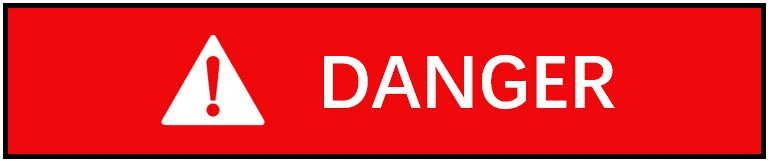
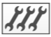

Wartungsübersicht
Der Zweck dieses Handbuchs ist es, Anweisungen und Richtlinien für die Wartung der L99-Laserschneidmaschine bereitzustellen. Es umfasst routinemäßige Wartungsarbeiten, Fehlerbehebungsverfahren und bewährte Methoden, um eine optimale Leistung und Langlebigkeit der Laserschneidmaschine sicherzustellen.
Informationen zur Wartung
Eine korrekte Wartung ist unerlässlich, damit die Maschine funktionsfähig und sicher bleibt. Sie verhindert Betriebsstörungen und deren Folgen.

Lebensgefahr bei Wartungsarbeiten mit eingeschalteter Maschine!
-
Sofern nicht ausdrücklich anders angegeben: Schalten Sie den HAUPTSCHALTER der Maschine und den HAUPTSCHALTER der jeweiligen Komponenten aus.
-
Sichern Sie den HAUPTSCHALTER und ziehen Sie den Schlüssel ab.
Die Maschine muss vor der Inbetriebnahme gemäß dem Schmierplan sorgfältig geschmiert werden. Die gesamte Schmierung der Maschine muss überprüft werden, wenn die Maschine längere Zeit nicht benutzt wurde (z. B. Überseetransport). Falls erforderlich, muss das verhärtete Öl vollständig von allen Schmierstellen und Versorgungsleitungen entfernt werden.
Einige Wartungsarbeiten umfassen Sichtprüfungen zur Gewährleistung der Betriebssicherheit. Diese Sichtprüfungen dürfen nur von entsprechend geschultem Personal durchgeführt werden.
Der Betreiber muss das Wartungspersonal zur Durchführung von Wartungsarbeiten an der Maschine autorisieren.
Je nach Kennzeichnung müssen die Wartungsarbeiten von den in der folgenden Tabelle angegebenen Personen durchgeführt werden:
| Kennzeichnung | Wartungspersonal |
|---|---|
|
Maschinenbediener |
|
Geschultes Wartungspersonal:
|
 |
Technischer Service:
|


-
Die gesamte Anlage sollte in regelmäßigen Abständen gereinigt werden.
-
Grobe Schmutz- und Staubablagerungen abbürsten oder mit einem Industriestaubsauger entfernen.
-
Beachten Sie den Schmierplan und die Wartungsanweisungen zur Schmierung der Maschine. Folgende Punkte sind zusätzlich zu beachten:
-
Einfüll- und Ablassverschlüsse nicht länger als nötig offen lassen und sauber halten.
-
Altöl nur bei Betriebstemperatur ablassen.
-
Verwenden Sie zum Reinigen von Ölkammern und Schmierstellen nur fusselfreie Reinigungstücher und dünnflüssiges Spindelöl ("Spülöl"). Verwenden Sie keine Putzwolle, Kerosin oder Benzol.
-
Mischen Sie keine synthetischen Schmieröle mit Mineralölen oder synthetischen Ölen anderer Hersteller, auch wenn das betreffende synthetische Öl gleichwertige Eigenschaften aufweist.
-
Altöl ordnungsgemäß entsorgen.
-